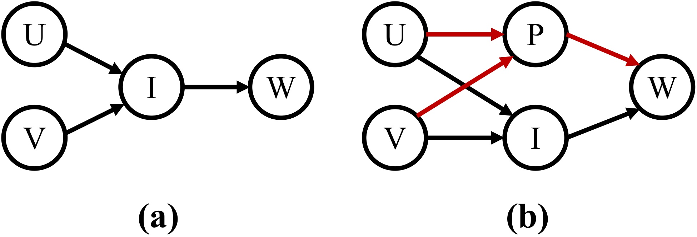
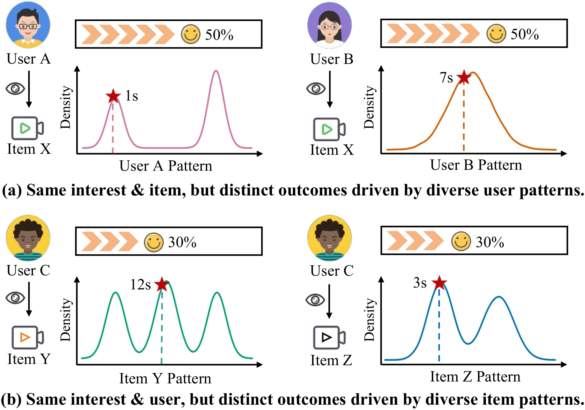
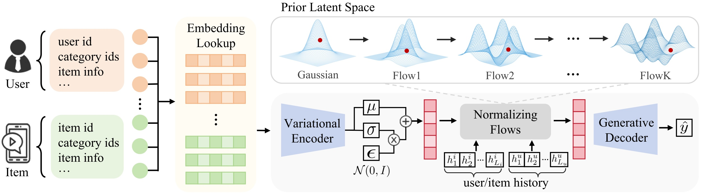
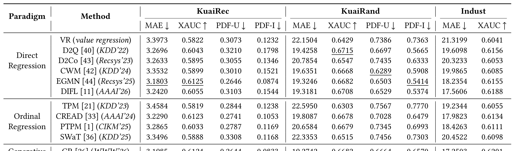
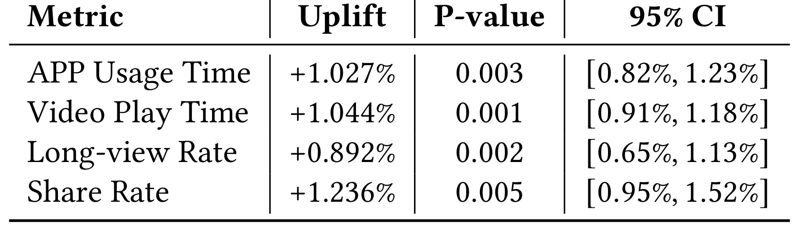
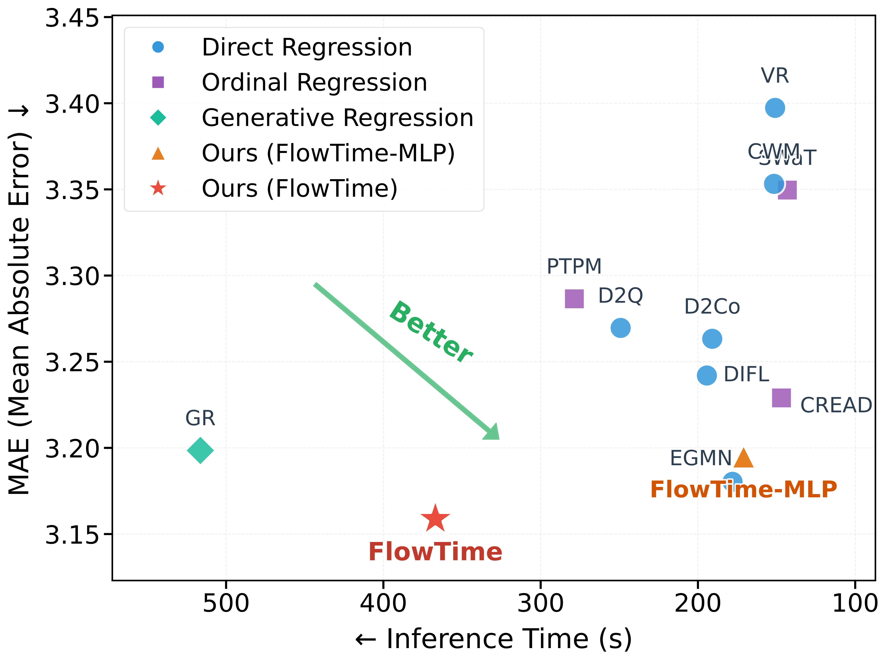
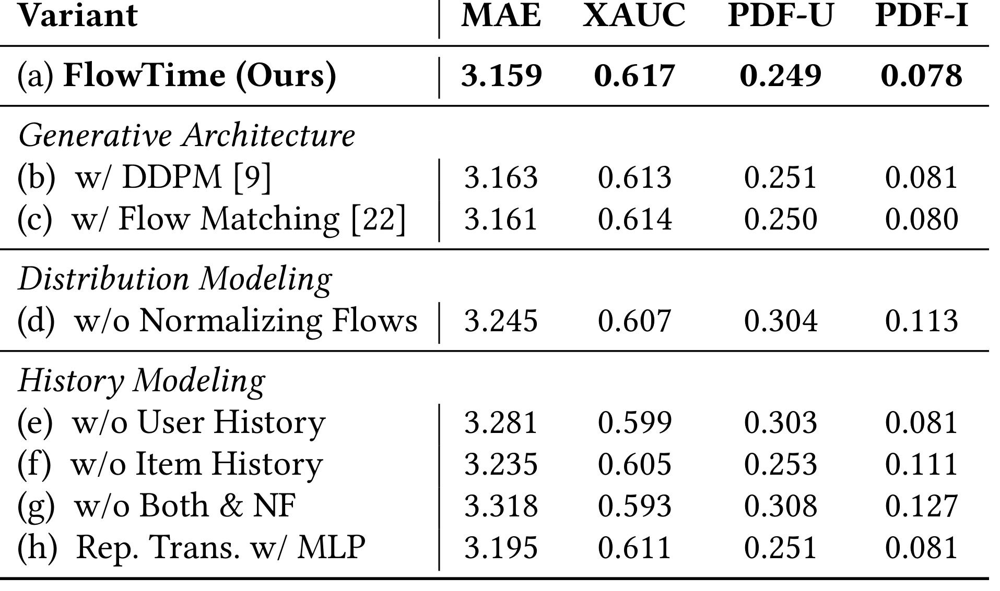
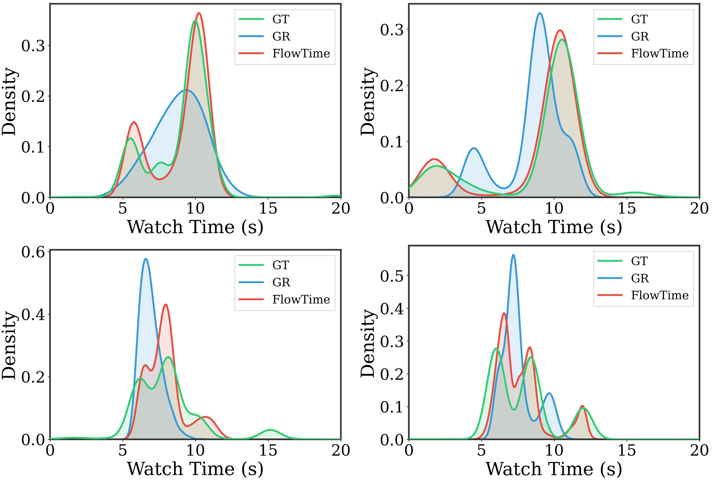
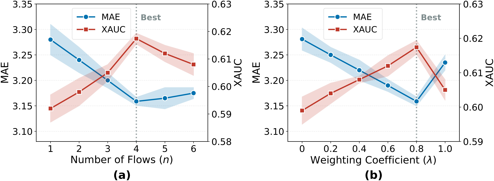

这篇 FlowTime: Towards Continuous Generative Watch Time Prediction via Flow-based Personalized Priors 是 KDD 2026 论文，第一作者 Hongxu Ma 来自 Fudan University，合作机构包括 Shanghai University of Finance and Economics、Kuaishou Technology 和 Tongji University。论文研究短视频推荐中的 watch time prediction，把观看时长从点回归或离散分类改写成连续生成式回归，并用 conditional normalizing flow 构造用户/物品历史条件下的个性化先验。论文中给出的 TimeRec 代码地址为 https://github.com/snailma0229/TimeRec.git，但本轮访问 GitHub 返回 404，因此代码可用性记为未核验。
1. 背景和问题
1.1 观看时长预测为什么比点击率更难
短视频推荐的目标正在从 CTR、like、share 这类离散反馈转向更深层的 engagement 指标，其中 watch time 是最常用、也最容易被业务系统接入的连续反馈。点击只说明用户愿意打开内容，完播或观看时长则更接近用户是否真正被内容吸引、是否愿意继续停留、是否会形成长期活跃。对排序系统而言，watch time prediction 直接影响流量分配、冷启动内容探索、用户满意度和平台总播放时长，因此它不是一个简单的辅助标签，而是可以改变推荐目标函数的核心信号。
困难在于观看时长是连续变量，而且它的分布通常高度多峰、长尾、异方差。同一个用户看到同一类视频时，可能因为碎片时间、习惯、视频长度、开头吸引力和当前会话状态不同而产生完全不同的观看时长；同一个视频面对不同用户时，也可能被快速划走、看一半或反复播放。传统 CTR 预测通常把标签压成 $0/1$，排序模型只需学习相对偏好；WTP 则要预测一个带有复杂分布形状的数值。如果直接用均方误差训练单点回归，模型倾向于输出条件均值；如果真实条件分布有多个高密度峰，条件均值反而可能落在低概率区域，形成论文所说的 mean-collapse。
1.2 三类既有范式的共同短板
论文把已有 WTP 方法概括成三类。第一类是 Direct Regression，用 MSE、MAE 或 Huber 之类的点回归目标直接拟合观看时长。它的优点是训练简单、推理快、容易接入线上 ranker；短板是隐含单峰 Gaussian 假设。若给定条件 $\boldsymbol{x}$ 下真实观看时长 $y$ 服从多峰分布，最小化平方误差会得到：
这个 $f^*(\boldsymbol{x})$ 是统计意义上的最优均值，但不一定是用户真实行为中高概率的观看时长。对于两个峰相距很远的分布，均值可能处在两个峰之间，既不代表短看，也不代表长看。模型在 MAE 上可能还不错，但对排序和分布保真并不可靠。
第二类是 Ordinal Regression，把连续时长切成多个阈值区间，预测 $P(y>c_m\mid\boldsymbol{x})$ 后再还原期望：
这类方法能缓解单点回归的部分问题，但引入了刚性离散化。阈值怎么设、bin 宽度是否适合不同用户、长尾时长是否被压缩，都会影响结果。更关键的是，ordinal 方法经常把多个二分类阈值当作条件独立或弱相关事件处理，而真实观看时长的阈值事件天然是强依赖的：如果一个样本超过 30 秒，它当然也超过 5 秒和 10 秒。论文在附录中用 KL 分解说明，忽略这种条件依赖会带来额外分布误差。
第三类是 Discrete Generative Regression，把观看时长离散成 token，用自回归方式生成时间 token。它比 ordinal 更像生成模型，但代价是推理延迟和词表设计。观看时长本来是连续量，强行量化成 token 会面对粒度选择、边界误差和长尾覆盖问题；自回归生成还会带来多步解码延迟，在工业短视频排序链路中很难承受。FlowTime 的问题意识正是在这里形成：能否保留生成模型对多峰分布的表达力，同时保持连续输出和一阶段推理效率？
1.3 交互模式是结构性混杂变量

图 1 是论文对 WTP 问题的因果重述。传统视角把用户 $U$ 和视频 $V$ 先映射成兴趣 $I$，再由兴趣决定观看时长 $W$；这相当于认为“越感兴趣，看得越久”。FlowTime 认为这个链条缺了一个关键节点：interaction pattern $P$。用户习惯会影响 $\boldsymbol{x}$0，例如有人喜欢快速浏览，有人习惯长看；视频属性也会影响 $\boldsymbol{x}$1，例如剧情类、教学类和封面党内容的观看曲线不同。$\boldsymbol{x}$2 同时受 $\boldsymbol{x}$3 影响，并调制 $\boldsymbol{x}$4，因此它不是普通噪声，而是结构性混杂因素。这个图的意义在于，它把 WTP 从“兴趣分数回归”提升到“条件行为模式生成”：模型不只要知道用户是否喜欢内容，还要知道这种喜欢会以什么观看模式表现出来。它还提醒线上排序不要把 $\boldsymbol{x}$5 当作唯一充分统计量，否则相同兴趣分下的短看习惯、长看习惯和内容节奏差异都会被错误吸收到噪声里。

图 2 把上面的因果直觉具体化。上半部分表示同一用户和同一物品、相同兴趣水平下，不同用户习惯可以让观看时长落到不同位置；下半部分表示同一用户和相近兴趣下，不同物品特性也会导致完全不同的时长分布。这里最重要的不是某个例子中的 7 秒、12 秒或 3 秒，而是分布形状本身：同一条件下可能出现多峰，峰的位置由用户历史和物品历史共同决定。点回归只能输出一个平均位置，ordinal 方法只能在离散格子上近似，离散生成又付出较高延迟。FlowTime 因此选择连续潜变量和流式先验，希望用一个可采样、可变形的 latent manifold 表达这些模式。换句话说，模型要学习的不是“这条样本应该是多少秒”这一个点，而是“在当前用户和物品模式下，哪些观看时长区域更可能出现”这一整组条件分布。
2. 方法
2.1 连续生成式回归的总体形式
FlowTime 提出 Continuous Generative Regression。它不直接学习 $\boldsymbol{x}$6，而是学习条件分布：
符号解释：这里 $\boldsymbol{x}$7 是用户、视频、上下文和历史特征，$\boldsymbol{x}$8 是观看时长，$\boldsymbol{x}$9 是连续 latent variable，$y$0 是 decoder 给出的观看时长分布，$y$1 是条件先验。和普通 VAE 不同，FlowTime 的先验不是简单标准 Gaussian，而是由用户/物品历史条件化的 normalizing flow 扭曲得到。这样做的直觉是：真实观看时长的多峰结构并不只是随机噪声，而是由交互模式决定；如果先验能感知这些模式，decoder 就不必把所有样本挤到同一均值附近。
这个形式同时服务训练和推理。训练阶段，模型看到真实 $y$2，用 encoder 近似后验 $y$3，再用 VAE 风格目标让 decoder 能从 latent 还原观看时长。推理阶段，真实 $y$4 不可见，模型从 flow-based personalized prior 中采样或取代表性 latent，经过 decoder 一次生成预测值。相比离散自回归生成，FlowTime 不需要逐 token 解码；相比点回归，它又保留了 latent distribution 的多峰表达力。

图 3 展示了 FlowTime 的三段式结构。左侧是用户和物品特征输入，包括 user id、category、age、item id、category id、item info 等；这些特征先经过 embedding lookup。中间下方是 variational encoder，它在训练时接收 $y$5 和 $y$6，输出后验 $y$7。中间上方是 prior latent space，从标准 Gaussian 出发，经过多步 normalizing flows，被用户/物品历史条件逐步扭曲成更复杂的先验。右侧 generative decoder 将最终 latent 和输入条件合并，输出 $y$8。这张图最值得注意的是 history condition 对 prior 的作用：历史不是简单拼到 ranker 输入里，而是直接控制 latent manifold 的形状，使生成分布具备个性化模式。
2.2 概率编码器和生成解码器
FlowTime 的概率编码器采用 VAE 后验形式：
为了可反向传播，训练时使用重参数化技巧：
符号解释：$y$9 和 $f^*(\boldsymbol{x})$0 是 encoder 输出的均值和标准差，$f^*(\boldsymbol{x})$1 是标准 Gaussian 噪声，$f^*(\boldsymbol{x})$2 表示逐元素乘法。这个模块只在训练阶段依赖真实观看时长 $f^*(\boldsymbol{x})$3，目的是学到“什么样的 latent 能解释这个样本的时长”。推理阶段不能使用 $f^*(\boldsymbol{x})$4，因此后验 encoder 不直接参与在线预测，而是通过训练约束帮助 decoder 和 prior 学会合理 latent 区域。
生成解码器负责把 latent 还原成观看时长分布。论文写成：
在实际预测中，核心输出可以理解为 $f^*(\boldsymbol{x})$5。这里的 $f^*(\boldsymbol{x})$6 是经过 $f^*(\boldsymbol{x})$7 步 flow 之后的 latent。decoder 的输入同时包含 latent 和原始条件，所以它不是无条件生成时长，而是在用户、物品和上下文约束下生成连续数值。和 mixture density network 相比，FlowTime 的多峰性主要由 flow prior 中的复杂 latent manifold 承担，而不是预设固定数量的 Gaussian mixture components。
基础 VAE 目标为：
第一项鼓励 latent 能重构真实观看时长，第二项让 encoder 后验靠近条件先验。若先验足够表达用户/物品模式，后验就不需要为每个样本单独记忆异常值；若先验太简单，KL 项会迫使多峰样本挤回标准 Gaussian 附近，重新出现分布塌缩风险。因此，Flow-based Personalized Prior 是整个模型的关键。
2.3 基于历史模式的个性化先验
论文先从用户历史和物品历史中构造 pattern encoding。设用户历史统计或分位序列为 $f^*(\boldsymbol{x})$8，物品历史为 $f^*(\boldsymbol{x})$9，经过投影和位置编码后分别送入 Transformer：
随后取历史编码得到 $P(y>c_m\mid\boldsymbol{x})$0 和 $P(y>c_m\mid\boldsymbol{x})$1，拼接成：
这里 $P(y>c_m\mid\boldsymbol{x})$2 不是普通特征拼接，而是 flow 的条件变量。它告诉先验：这个用户过往更像短看、长看还是多峰；这个物品面对人群时更容易被快速划走还是完整消费；用户和物品组合后，latent 应该落在哪些区域。Transformer 的作用是建模历史序列中的位置和模式变化，而不是只用均值、方差这类粗统计。
2.4 Normalizing Flow 如何扭曲 latent manifold
FlowTime 从标准 Gaussian latent $P(y>c_m\mid\boldsymbol{x})$3 出发，经过 $P(y>c_m\mid\boldsymbol{x})$4 个条件 flow：
论文采用条件 planar flow 形式：
符号解释：$P(y>c_m\mid\boldsymbol{x})$5 表示第 $P(y>c_m\mid\boldsymbol{x})$6 个 flow step，$P(y>c_m\mid\boldsymbol{x})$7、$P(y>c_m\mid\boldsymbol{x})$8 和 $P(y>c_m\mid\boldsymbol{x})$9 都由历史条件生成。这个变换可以理解为：在 latent 空间中，根据用户/物品交互模式对标准 Gaussian 做可逆形变，把本来简单、对称、单峰的先验拉伸、弯曲、压缩成更贴近真实观看行为的 manifold。由于 flow 可逆，密度可以通过 Jacobian determinant 校正：
符号解释：这里 $U$0 表示条件信息，$U$1 是标准 Gaussian，后一项是可逆变换的体积修正。这个式子是 FlowTime 相比普通 VAE prior 的主要区别：它不是让所有样本共用一个圆形 latent prior，而是为不同历史条件生成不同的可计算密度。直觉上，短看型用户的 prior 可以把 latent mass 放在短时长相关区域；长看型用户或长内容物品的 prior 可以把 mass 拉向长时长区域；多峰用户则可以形成多个高密度区域。
附录中的 latent partitioning 进一步解释了这个设计。如果 decoder $U$2 是 Lipschitz 连续的，不同真实模式 $U$3 和 $U$4 间隔为 $U$5，当 $U$6 时，对应 latent 区域 $U$7 和 $U$8 可以保持分离：
这说明只要 latent manifold 能覆盖不同模式区域，decoder 就不必把多个模式平均到一起。Normalizing flow 的作用，是把标准 Gaussian 的概率质量通过 pullback 映射集中到这些有意义区域，从而降低 mean-collapse。
2.5 连续分布生成和联合优化
FlowTime 的训练目标不只是一条 VAE ELBO。论文最终用三类损失共同约束。第一是点预测锚定项：
这个项保证模型不会为了追求分布形状而牺牲基础误差。Huber loss 比纯 MSE 更抗长尾异常时长，适合短视频场景中极端观看行为较多的标签分布。
第二是 latent regularization：
它约束 encoder 的初始 latent 不要偏离标准 Gaussian 太远，避免 flow 之前的 latent 空间失控。第三是分布对齐项 W-Dist。论文使用从预测样本和用户/物品历史分位信息得到的排序序列，构造 Wasserstein 风格距离：
也可以写成对预测样本排序后与目标序列排序对齐的形式。这里 $U$9 表示用户历史分位，$V$0 表示物品历史分位，$V$1 控制用户模式和物品模式的权重。它解决的是一个容易被忽略的问题：即使点误差不大，预测分布也可能不像这个用户或这个物品的真实历史分布。W-Dist 强迫生成样本在分位结构上接近个性化模式。
最终损失为：
从工程角度看，这个组合很克制。FlowTime 没有把 WTP 完全变成复杂扩散或多步自回归生成，而是在一阶段 VAE/flow 框架中加入三个约束：点误差保证排序基础可用，latent 正则保证训练稳定，W-Dist 保证分布形状个性化。推理时仍然只需通过 flow prior 和 decoder 得到预测，不需要像离散生成那样逐步采样时间 token。
2.6 多模态捕获的直觉边界
FlowTime 不是声称所有 WTP 问题都必须生成建模，而是指出当真实条件分布具有多峰和异质性时，点估计会在低密度区域犯系统性错误。若真实分布可写成多个模式的混合，平方误差最优解为：
当各模式间距远大于峰内方差时，$V$2 对应的真实概率密度可能趋近于 0。这就是 mean-collapse 的数学描述。FlowTime 用 latent region 与 decoder mode 对齐来绕开这个问题：不同模式对应不同 latent 区域，flow prior 根据历史条件把概率质量送到合适区域，decoder 再输出对应观看时长。
这一路线也有边界。第一，如果某个业务场景的 watch time 分布本身接近单峰，FlowTime 的复杂 prior 未必显著优于强回归模型。第二，flow prior 依赖用户和物品历史分位，如果新用户、新视频或极端冷启动缺乏历史，个性化模式会弱化。第三，normalizing flow 虽然比扩散和自回归快，但仍比最简单的 MLP 回归复杂，线上部署需要确认延迟、吞吐和特征一致性。
3. 实验结果
3.1 TimeRec 设置和评价指标
论文构建 TimeRec Library，至少包含 KuaiRand-Pure 和 KuaiRec 两个公开数据集。KuaiRand-Pure 有 27,285 个用户、7,583 个物品和 1,186,059 次曝光，特点是 unbiased；KuaiRec 有 7,176 个用户、10,728 个物品和 12,530,806 次曝光，特点是 high density。论文还使用一个工业数据集 Indust 做补充验证，但公开表格没有给出该数据集的完整规模。本轮笔记据论文内容记录，不额外推断。
评价指标包括 MAE、XAUC 和 Personalized Distributional Fidelity。MAE 衡量点误差，越低越好；XAUC 衡量预测值对真实观看时长排序关系的保持程度，越高越好；PDF-U 和 PDF-I 用 Jensen-Shannon Divergence 衡量用户级和物品级真实/预测观看时长分布的差异，越低越好。PDF 指标是这篇论文实验设计的关键，因为 FlowTime 的主张不是只降低平均误差，而是更好拟合个性化分布形状。
3.2 离线主结果

表 2 是最核心的离线证据。FlowTime 在 KuaiRec 上取得 MAE 3.1588、XAUC 0.6174、PDF-U 0.2634、PDF-I 0.0823，四项都是表中最优；在 KuaiRand 上取得 MAE 19.1045、XAUC 0.6751、PDF-U 0.5974、PDF-I 0.4861，也都是最优；在工业数据集 Indust 上，FlowTime 的 MAE 16.9553 和 XAUC 0.6243 同样领先。对比 Direct Regression 中较强的 EGMN 和 DIFL，FlowTime 的优势不只在 MAE，也体现在 PDF-U/PDF-I；这说明它改善的不是单纯数值偏差，而是个性化分布保真。对比 GR 这种离散生成范式，FlowTime 在 KuaiRec、KuaiRand、Indust 上都更好，说明连续生成不只是节省延迟，也避免了离散 token 化带来的量化误差。
从范式角度看，Direct Regression 的强项是效率和稳定，但容易把多峰样本推向均值；Ordinal Regression 能处理阈值顺序，却被 binning 和阈值依赖限制；Discrete Generative Regression 能表达复杂分布，但设计词表和自回归推理成本较高。FlowTime 在表 2 中被归为 Generative Regression，但更准确地说是 Continuous Generative Regression：它保留生成分布的能力，同时直接输出连续数值。表中 PDF-U/PDF-I 的提升尤其支持这一点，因为如果 FlowTime 只是靠更强 encoder 降低 MAE，分布保真指标不会同步改善得这么明显。
3.3 线上 A/B 和业务指标

表 3 给出线上 A/B 测试，论文称在某头部平台 Trending Video Recommendation 场景部署 FlowTime，服务 10% 流量 6 天，平台 DAU 超过 4 亿。结果显示 APP Usage Time 提升 1.027%，p-value 为 0.003，95% CI 为 $V$3；Video Play Time 提升 1.044%，p-value 为 0.001，95% CI 为 $V$4；Long-view Rate 提升 0.892%；Share Rate 提升 1.236%。这些指标都不是离线 proxy，而是推荐系统直接关心的业务反馈。尤其是播放时长和 App 使用时长同时提升，说明 FlowTime 没有只把长视频或标题党内容推高，而是在整体观看体验上获得收益。
当然，线上表也需要谨慎解读。论文没有在表中展开实验平台的完整流量分层、实验桶稳定性、和长期留存影响，也没有说明是否有多目标约束防止单纯拉长观看时长。对工业推荐而言，watch time 提升可能带来满意度，也可能带来沉迷或低质量内容放大风险。因此，这组结果可以证明 FlowTime 具备线上可用性，但不能单独证明它对长期用户价值总是正向。更合理的读法是：在已有平台规则和多目标排序约束下，用 FlowTime 替换或增强 WTP 模块，可以带来统计显著的 engagement 提升。
3.4 效率-性能权衡

图 4 把 MAE 和推理时间放在同一张散点图里，右下角代表更低误差和更快推理。Direct Regression 方法通常更快，但误差较高；Ordinal Regression 和部分复杂回归方法也没有达到最佳权衡；GR 虽然是生成范式，但推理时间更长。FlowTime 位于低误差区域，同时推理时间明显低于 GR，论文称相对 GR 推理延迟降低近 30%。图中还给出 FlowTime-MLP 变体，它进一步向右移动，说明如果线上延迟约束更紧，可以用更轻的表征模块换取速度。
这张图回应了推荐工程中的核心质疑：生成式预测是否太慢。FlowTime 的答案是，一阶段连续生成可以比自回归离散生成更适合排序链路。它没有像扩散模型那样多步去噪，也没有像 language model 那样逐 token 生成时长；normalizing flow 的额外计算主要发生在低维 latent 变换中，且可并行。对大规模短视频推荐而言，这种权衡比单纯追求最小 MAE 更重要，因为每次请求可能需要对大量候选视频打分，延迟预算非常紧。
3.5 消融实验

表 4 显示 FlowTime 完整模型在 KuaiRec 上 MAE 3.159、XAUC 0.617、PDF-U 0.249、PDF-I 0.078。把生成架构替换为 DDPM 后，MAE 变为 3.163，XAUC 0.613；替换为 Flow Matching 后，MAE 3.161，XAUC 0.614。这说明其他连续生成方法也有一定效果，但 FlowTime 的一阶段 VAE + conditional NF 组合更适合 WTP 的效率和精度平衡。去掉 Normalizing Flows 后，MAE 升至 3.245，PDF-U 升至 0.304，PDF-I 升至 0.113，是非常明显的退化，说明 flow-based personalized prior 不是装饰模块，而是分布表达的核心。
历史建模消融也很有信息量。去掉用户历史后 MAE 3.281、XAUC 0.599，说明用户习惯对观看时长模式影响很大；去掉物品历史后 MAE 3.235、PDF-I 0.111，说明物品被不同用户消费的模式同样重要；同时去掉历史和 NF 后，MAE 3.318、XAUC 0.593、PDF-I 0.127，是最差结果。把 representation transformer 换成 MLP 后仍有一定性能，但不如完整模型，说明序列历史中的模式顺序和分位结构有价值。这个消融结果与前面因果图一致：$V$5 同时受用户和视频影响，不能只靠静态特征或单点兴趣分数近似。
3.6 分布保真和个性化模式

图 5 展示多个用户/物品样本的预测观看时长分布，比较 GT、GR 和 FlowTime。蓝色 GT 曲线往往有多个峰，绿色 GR 曲线有时能抓住部分峰，但会出现峰位偏移或过度平滑；红色 FlowTime 曲线整体更贴近 GT，尤其在多峰位置和峰宽上更稳定。这个图是对 PDF-U/PDF-I 指标的直观解释：FlowTime 的收益不只是让平均值更准，而是让预测分布形状更像真实历史。对于排序系统，这意味着模型可以更好地区分“可能短看但也可能长看”的样本和“稳定中等观看”的样本，而不是把它们都压成同一个期望值。
这个结果也解释了为什么论文强调 user-item interaction patterns。如果只看兴趣强度，两个样本可能相似；如果看分布形状，一个可能是双峰，另一个可能是窄峰。前者适合探索或多目标调节，后者适合稳定排序。FlowTime 的 latent sampling 和 flow prior 给了模型表达这种差异的空间。需要注意的是，论文最终线上系统通常仍需要输出一个可排序分数，分布信息怎样转成 ranking score 取决于业务目标：可以用均值、分位数、风险调整分数或与其他目标融合。论文主要证明 FlowTime 能生成更真实的分布，并没有穷尽所有决策策略。
3.7 超参数影响

图 6 分析两个关键超参数。左图是 flow steps $V$6 的影响。随着 $V$7 从较小值增大，MAE 下降、XAUC 上升，说明更复杂的 flow 变换可以更好扭曲先验；但当 $V$8 继续增大后收益变小甚至波动，论文中较优点大约在 $V$9 附近。这符合 normalizing flow 的常见规律：流步数太少表达力不足，太多则增加优化难度、延迟和过拟合风险。右图是用户/物品 weighting coefficient $I$0 的影响，$I$1 控制 W-Dist 中用户历史分位和物品历史分位的权重。曲线显示中间权重更好，过度偏向用户或物品都会损害 MAE/XAUC。
这说明 FlowTime 的个性化不是“用户历史越强越好”，也不是“物品历史越强越好”。观看时长来自用户习惯和视频属性共同作用：短看型用户遇到强吸引视频可能长看，长内容视频遇到浏览型用户也可能短看。$I$2 的作用是调节这两类模式的相对重要性。工程复现时不应把它固定为拍脑袋常数，而应按场景和指标做验证；例如信息流短视频、长视频推荐、直播推荐和电商内容推荐对用户/物品历史的依赖可能不同。
4. 总结
4.1 我的判断
FlowTime 的价值在于把 WTP 中长期存在的三种矛盾放进同一个框架：连续标签不能被粗暴离散化，多峰分布不能用单点均值概括，线上推理又不能承受复杂自回归生成。它用 VAE 提供连续 latent，用 conditional normalizing flow 提供个性化先验，用 W-Dist 把用户/物品历史分布显式接入训练目标。论文的离线结果、线上 A/B、效率图和消融共同支持这个设计，不是只在某一个指标上堆技巧。
我认为这篇论文对推荐系统工程最有启发的地方，是把“观看时长预测”从一个普通 regression head 变成“行为分布建模”。在很多业务里，排序模型最终仍然只消费一个分数，但分数背后的不确定性、分布峰值和个性化模式会影响策略选择。FlowTime 提供了一个相对轻量的生成式实现路径，不必直接上扩散模型或大语言模型式 token 生成。
4.2 工程启发与复现建议
复现时首先要确认标签口径。watch time 可以是绝对秒数、归一化播放比例、截断时长、去极值后时长，口径不同会显著影响分布形状。其次要构造可靠的用户和物品历史分位特征；如果历史窗口太短，$I$3 和 $I$4 会噪声很大，flow prior 可能学到伪模式。第三要把 MAE/XAUC 与分布指标同时监控。若只看 MAE，模型可能退化成更强的回归器；若只看 PDF，模型可能牺牲排序可用性。第四要在线上做延迟预算，特别是候选规模很大时，FlowTime-MLP 或减少 flow steps 可能更实际。
我还建议把 FlowTime 的输出分成两个层面使用：一个是排序主分数，例如均值或业务加权分位数；另一个是分布诊断信号，例如预测方差、多峰程度、长看概率。这些信号可以服务探索、内容多样性、风险控制和多目标融合。论文没有展开这些策略，但它的分布式预测天然适合提供这类信息。
4.3 局限和后续跟进
这篇论文仍有几个局限。第一，代码地址本轮未能访问，短期复现需要等待作者更新仓库或从论文细节自行实现。第二，工业数据集不可公开，线上 A/B 的实验细节有限，外部读者无法确认流量分层、长期留存和内容质量约束。第三，WTP 优化本身可能诱导过度追求停留时长，真实业务应与满意度、安全、多样性和长期留存共同约束。第四，cold-start 场景下用户/物品历史不足，Flow-based Personalized Prior 的优势可能减弱。第五，论文主要比较 WTP 范式，没有深入讨论和多任务 ranker、calibration、causal debiasing 的联合部署。
后续值得跟进三件事：其一，TimeRec 代码和数据处理脚本是否公开可用，尤其是 PDF-U/PDF-I 的精确定义和实现；其二，FlowTime 作为 teacher 或 auxiliary head 能否蒸馏到更轻的线上模型；其三，分布输出能否直接服务策略层，例如长看概率、低质量长看惩罚、或者基于不确定性的探索。若这些问题能进一步验证，FlowTime 不只是一篇 WTP 论文，也可能成为推荐系统里连续反馈生成建模的一条实用路线。